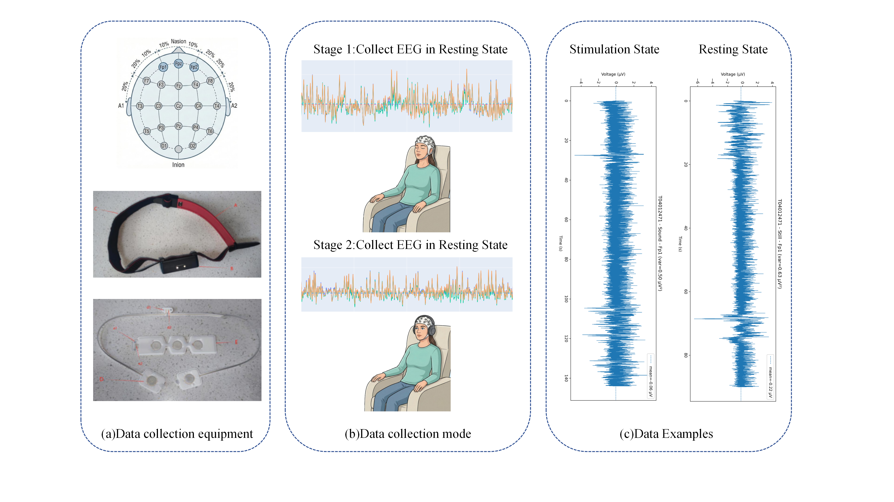

• A large-scale three-lead frontal EEG dataset
• A two-stage self-supervised pretraining framework

Figure: The experimental paradigm for the three-lead frontal EEG data collection.
In recent years, electroencephalography (EEG)-based auxiliary recognition of mental disorders has gradually become an important research direction. However, most existing methods and datasets are designed for single-disorder settings and are built upon multichannel EEG acquisitions. Meanwhile, the overlap in symptoms and neural representations across different mental disorders makes differential diagnosis in real-world clinical scenarios still highly challenging. To address this issue, we construct a three-lead frontal EEG dataset for differential diagnosis across multiple mental disorders, covering depression, anxiety, schizophrenia, and healthy controls, with all diagnostic labels clinically annotated by professional psychiatrists. To more effectively capture both the shared and discriminative representations of multiple mental disorders under a low-channel setting, we further propose a two-stage self-supervised pretraining framework for three-lead frontal EEG. Specifically, the framework includes two key modules: a multi-view channel expansion module inspired by physiological prior knowledge, and a synchronous frequency-band masking module guided by the physiological significance of EEG frequency bands. Extensive experiments demonstrate that our framework consistently outperforms existing baseline methods, highlighting the important reference value of physiological prior knowledge and physiological frequency bands in EEG-based mental disorder recognition. The dataset and all codes for the experiments in this paper have been publicly released on GitHub.
• A large-scale three-lead frontal EEG dataset
• A two-stage self-supervised pretraining framework
This dataset provides high-quality three-lead frontal EEG (Fp1, Fp2, Fpz) recordings for multi-psychiatric disorder analysis. It spans diverse clinical settings to ensure robust evaluation of recognition frameworks.
(a) Time-frequency map of the Fp1 electrode. (b) Time-voltage graph of the resting-state Fp1 electrode. (c) Time-voltage graph of the Fp1 electrode in the stimulated state. (d) The power spectral density of one of the electrodes.
Replace Anonymous Authors and update the final citation fields once the paper is publicly available.
@inproceedings{yourdataset2026,
title = {A Multi-Psychiatric Disorder Dataset via Three-Lead Frontal Electroencephalography},
author = {Anonymous Authors},
booktitle = {Proceedings of the {"ACM MM"} 2026},
year = {2026}
}